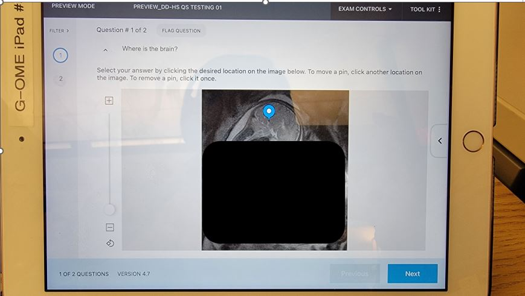
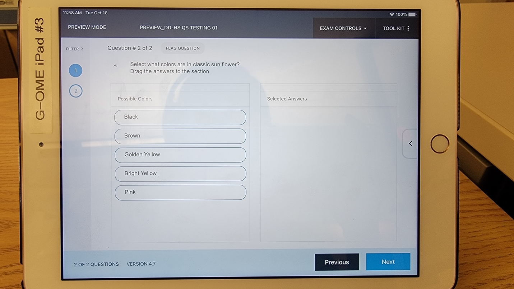
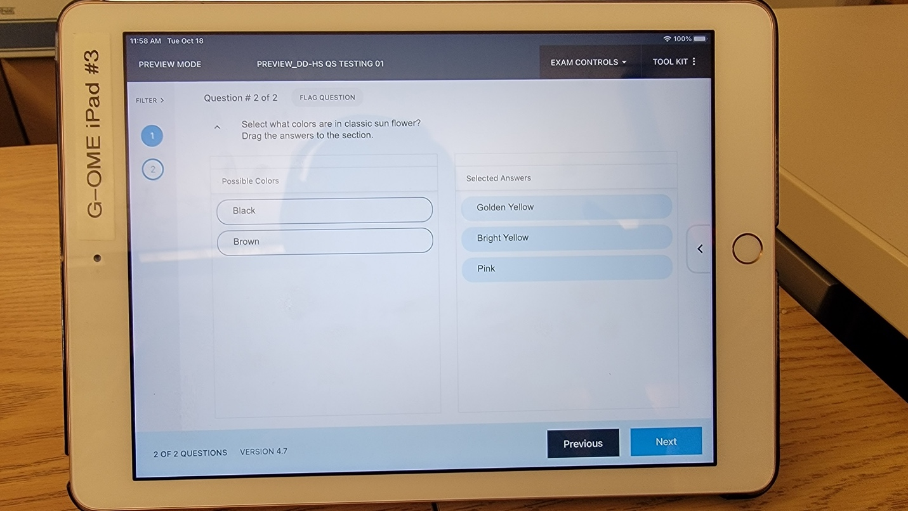

Questions
Questions live in the question bank. Get there from the Questions menu or Create Questions on the portal home.
Question types
| Type | OME stance | Notes |
|---|---|---|
| Multiple Choice | Preferred | Handles one or several correct answers. |
| True / False | Fine | Discriminates poorly. Use sparingly. |
| Fill in the Blank | Not preferable | Spelling is scored. Produces more disputes. |
| Matching | Not preferable | Produces more post-exam adjustments. |
| Hot Spot | Good for images | Rectangle or polygon. Student drops a pin. |
| Drag and Drop | Good, with care | Does not score sequence. Partial credit subtracts. |
Embedding vs. attaching images
| Embedded image | Attached image | |
|---|---|---|
| Where it appears | Inline in the question or answer choice | Pop-up the student opens from a paperclip icon |
| Prints on hard copy? | Yes | No |
| How to add | Click the image icon in the question editor | Use the Attachments panel below the question |
| File limits | GIF, JPG, PNG. 3 MB, 1920 x 1080 max | Same formats plus PDF, RTF, audio, video |
Question groups (vignettes)
A group keeps related questions together when the assessment is randomized. Use it for clinical scenarios where several questions reference the same stem.
- While creating a question, type a group name in the Group field.
- Give every question in the vignette the same group name (case-sensitive).
- When questions are added to an assessment, grouped questions stick together.
Fill in the Blank
Hot Spot
- Pick rectangle or polygon first. Polygon is better for irregular structures.
- Drag the image onto the question. GIF, JPG, and PNG all work.
- Drag to outline the correct region. Students can pinch to zoom on the iPad.

Drag and Drop


Vendor reference